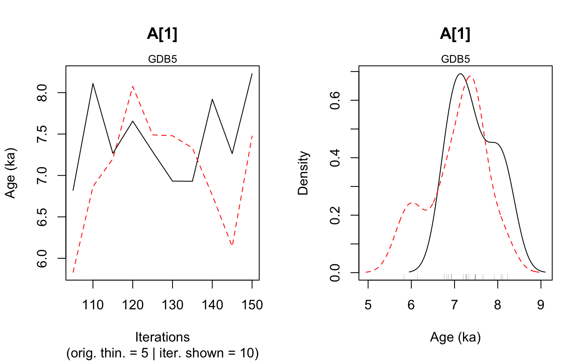
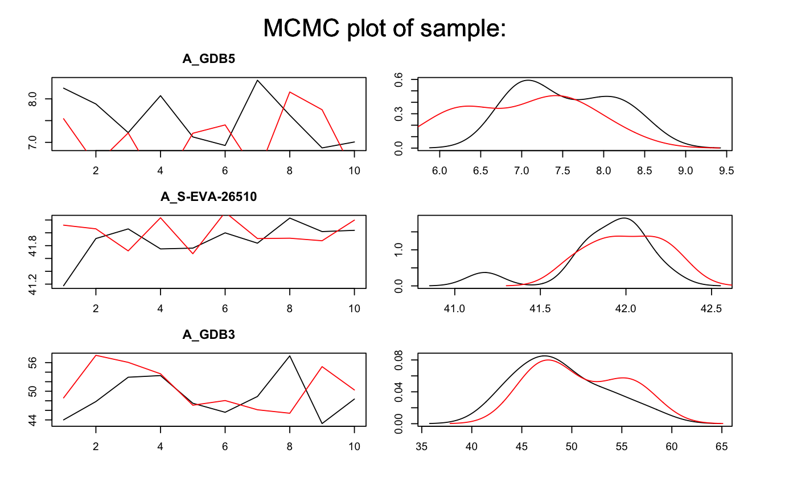
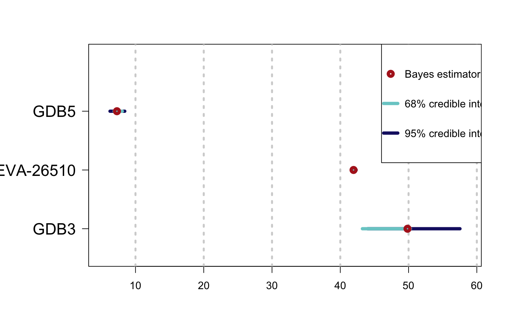

Bayesian analysis for age estimation of OSL measurements and C-14 ages of various samples
Source:R/Age_OSLC14.R
Age_OSLC14.RdThis function compute an age of OSL data of at least two samples and calibrate
C-14 ages of samples to get an age (in ka).
Age of OSL data are computed according to the model given in Combes and Philippe (2017).
Single-grain or Multi-grain OSL measurements can be analysed simultaneously
(with output of Generate_DataFile or Generate_DataFile_MG or both of them using combine_DataFiles).
Samples, for which data is available in several BIN files, can be analysed.
For C-14 data, the user can choose one of the following radiocarbon calibration curve:
Northern or Southern Hemisphere or marine atmospheric.
Age_OSLC14( DATA, Data_C14Cal, Data_SigmaC14Cal, Nb_sample, SampleNames, SampleNature, PriorAge = rep(c(10, 60), Nb_sample), SavePdf = FALSE, OutputFileName = c("MCMCplot", "HPD_Cal14CCurve", "summary"), OutputFilePath = c(""), SaveEstimates = FALSE, OutputTableName = c("DATA"), OutputTablePath = c(""), StratiConstraints = c(), sepSC = c(","), BinPerSample = rep(1, sum(SampleNature[1, ])), THETA = c(), sepTHETA = c(","), LIN_fit = TRUE, Origin_fit = FALSE, distribution = c("cauchy"), Model_C14 = c("full"), CalibrationCurve = c("IntCal20"), Iter = 50000, t = 5, n.chains = 3, quiet = FALSE, roundingOfValue = 3 )
Arguments
| DATA | list of objects: |
|---|---|
| Data_C14Cal | numeric vector: corresponding to C-14 age estimate
(in years, conversion in ka is automatically done in the function).
If there is stratigraphic relations between samples, |
| Data_SigmaC14Cal | numeric: corresponding to the error of C-14 age estimates. |
| Nb_sample | numeric: number of samples (OSL data and C-14 age),
( |
| SampleNames | character: sample names for both OSL data and C14 data.
The length of this vector is equal to |
| SampleNature | matrix: states the nature of the sample.
Row number of |
| PriorAge | numeric (with default): lower and upper bounds for age parameter of each sample (in ka).
Note that, |
| SavePdf | logical (with default): if |
| OutputFileName | character (with default): name of the pdf file that
will be generated by the function if |
| OutputFilePath | character (with default): path to the pdf file that will
be generated by the function if |
| SaveEstimates | logical (with default): if TRUE save Bayes' estimates,
credible interval at level 68% and 95% and the result of the Gelman en Rubin
test of convergence, in a CSV-table named |
| OutputTableName | character (with default): name of the table that will
be generated by the function if |
| OutputTablePath | character (with default): path to the table that will
be generated by the function if |
| StratiConstraints | matrix or character (with default): input object for the
stratigraphic relation between samples. If there is stratigraphic relation between
samples see the details section for instructions regarding how to correctly fill |
| sepSC | character (with default): if |
| BinPerSample | numeric (with default): vector with the number of BIN-files
per OSL sample. The length of this vector is equal to the number of OSL samples.
|
| THETA | numeric matrix or character (with default): input object for
systematic and individual error for OSL samples. If systematic errors are considered,
see the details section for instructions regarding how to correctly fill |
| sepTHETA | character (with default): if |
| LIN_fit | logical (with default): if |
| Origin_fit | plogical (with default): if |
| distribution | character (with default): type of distribution that defines
how individual equivalent dose values are distributed around the palaeodose, for OSL samples.
Allowed inputs are |
| Model_C14 | character (with default): if |
| CalibrationCurve | character (with default): calibration curve chosen, for C-14 samples. Allowed inputs are
|
| Iter | numeric (with default): number of iterations for the MCMC computation (for more information see rjags::jags.model. |
| t | numeric (with default): 1 every |
| n.chains | numeric (with default): number of independent chains for the model (for more information see [rjags::jags.model). |
| quiet | logical (with default): enables/disables rjags messages |
| roundingOfValue | integer (with default): Integer indicating the number of decimal places to be used, default = 3. |
Value
NUMERICAL OUTPUT
A list containing the following objects:
Sampling: that corresponds to a sample of the posterior distributions of the age parameters (in ka for both C14 samples and OSL samples);
PriorAge: stating the priors used for the age parameter;
StratiConstraints: stating the stratigraphic relations between samples considered in the model;
Model_OSL_GrowthCurve: stating which dose response fitting option was chosen;
Model_OSL_Distribution: stating which distribution was chosen to model the dispersion of individual equivalent dose values around the palaeodose of the sample;
Model_C14: stating which model was chosen (
"full"or"naive");CalibrationCurve: stating which radiocarbon calibration curve was chosen;
Outlier: stating the names of samples that must be outliers.
The Gelman and Rubin test of convergency: prints the result of the Gelman and Rubin test of convergence for the age estimate for each sample. A result close to one is expected.
In addition, the user must visually assess the convergence of the trajectories by looking at the graph generated by the function (see PLOT OUTPUT for more informations).
If both convergences (Gelman and Rubin test and plot checking) are satisfactory, the user can consider the estimates as valid. Otherwise, the user may try increasing the number of MCMC iterations (Iter) or be more precise on thePriorAgeparameter to reach convergence.Credible intervals and Bayes estimates: prints the Bayes' estimates, the credible intervals at 95% and 68% for the age parameters for each sample.
PLOT OUTPUT
MCMC trajectories: A graph with the MCMC trajectories and posterior distributions of the age parameter is displayed.
On each line, the plot on the left represents the MCMC trajectories, and the one on the right the posterior distribution of the parameter.Age estimate and HPD at 95% of 14C samples on calibration curve: plot age estimate and HPD on calibration plot.
Summary of sample age estimates: plot credible intervals and Bayes estimate of each sample age on a same graph.
Details
Note that there is tree type of arguments in the previous list.
There are arguments for information concerning only OSL samples: DATA, BinPerSample, THETA,
sepTHETA, LIN_fit, Origin_fit, distribution.
There are arguments for information concerning only C14 samples: Data_C14Cal, Data_SigmaC14Cal,
Model_C14, CalibrationCurve.
There are arguments for information concerning all the samples: Nb_sample, SampleNames, SampleNature,
PriorAge, SavePdf, OutputFileName, OutputFilePath, SaveEstimates, OutputTableName,
OutputTablePath, StratiConstraints, sepSC.
** How to fill StratiConstraints ? **
If there is stratigraphic relations between samples, 14C estimate age in Data_C14Cal must be ordered by order of increasing ages,
as informations in DATA. Names in SampleNames must be ordered and corresponds to the order in Data_C14Cal and in DATA,
also if it is needed to mix names of OSL samples and 14C samples.
The user can fill the StratiConstraints matrix as follow.
Size of the matrix: row number of
StratiConstraintsmatrix is equal toNb_sample+1, and column number is equal toNb_sample.First line of the matrix: for all
i in {1,...,Nb_Sample},StratiConstraints[1,i]=1that means the lower bound of the sample age (given inPriorAge[2i-1]) for the sample whose number ID is equal toi, is taken into account.Sample relations: for all
j in {2,...,Nb_Sample+1}and alli in {j,...,Nb_Sample},StratiConstraints[j,i]=1if sample age whose number ID is equal toj-1is lower than sample age whose number ID is equal toi. Otherwise,StratiConstraints[j,i]=0.
Note that StratiConstraints_{2:Nb_sample+1,1:Nb_sample} is a upper triangular matrix.
The user can also use SCMatrix or SC_Ordered (if all samples are ordered) function to construc
the StratiConstraints matrix.
The user can also refer to a csv file that containts the relation between samples as defined above.
The user must take care about the separator used in the csv file using the argument sepSC.
** How to fill THETA covariance matrix concerning common and individual error? **
If systematic errors are considered, the user can fill the THETA matrix as follow.
row number of
THETAis equal the column number, equal toNb_sample.For all
i in {1,...,Nb_sample},THETA[i,i]containts individual error plus systematic error of the sample whose number ID is equal toi.For all
i,j in {1,...,Nb_sample}andidifferent fromj,THETA[i,j]contains common error between samples whose number ID are equal toiandj.
Note that THETA[i,j] is a symmetric matrix.
The user can also refer to a .csv file that contains the errors as defined above.
** Option on growth curves **
As for Age_Computation and Palaeodose_Computation, the user can choose from 4 dose response curves:
Saturating exponential plus linear growth (
AgesMultiCS2_EXPLIN):for all
xin IR+,f(x)=a(1-exp(-x/b))+cx+d; selectLIN_fit=TRUEOrigin_fit=FALSE
Saturating exponential growth (
AgesMultiCS2_EXP):for all
xin IR+,f(x)=a(1-exp(-x/b))+d; selectLIN_fit=FALSEOrigin_fit=FALSE
Saturating exponential plus linear growth and fitting through the origin (
AgesMultiCS2_EXPLINZO):for all
xin IR+,f(x)=a(1-exp(-x/b))+cx; selectLIN_fit=TRUEOrigin_fit=TRUE
Saturating exponential growth and fitting through the origin (
AgesMultiCS2_EXPZO):for all
xin IR+,f(x)=a(1-exp(-x/b)); selectLIN_fit=FALSEOrigin_fit=TRUE
** Option on equivalent dose distribution around the palaeodose **
The use can choose between :
cauchy: a Cauchy distribution with location parameter equal to the palaeodose of the samplegaussian: a Gaussian distribution with mean equal to the palaeodose of the samplelognormal_A: a log-normal distribution with mean or Average equal to the palaeodose of the samplelognormal_M: a log-normal distribution with Median equal to the palaeodose of the sample
** More precision on Model **
We propose two models "full" or "naive". If Model='full' that means measurement error and error on calibration curve are taken account in
the Bayesian model; if Model="naive" that means only error on measurement are taken account in the mode.
More precisely, the model considered here, as the one developped by Christen, JA (1994), assume multiplicative effect of errors to address the problem of outliers. In addition, to not penalyse variables that are not outliers and damage theirs estimation, we introduce a structure of mixture, that means only variable that are considered as outlier have in addition a multiplicative error.
Note
Please note that the initial values for all MCMC are currently all the same for all chains since we rely on the automatic initial value generation of JAGS. This is not optimal and will be changed in future. However, it does not affect the quality of the age estimates if the chains have converged.
How to cite
Christophe, C., Philippe, A., Guerin, G., Kreutzer, S., 2020. Age_OSLC14(): Bayesian analysis for age estimation of OSL measurements and C-14 ages of various samples. In: Christophe, C., Philippe, A., Kreutzer, S., Guerin, G., 2020. BayLum: Chronological Bayesian Models Integrating Optically Stimulated. R package version 0.2.0. https://CRAN.r-project.org/package=BayLum
References
Reimer PJ, Bard E, Bayliss A, Beck JW, Blackwell PC, Bronl Ramsey C, Buck CE, Cheng H, Edwards RL, Friedrich M, Grootes PM, Guilderson TP, Haflidason H, Hajdas I, Hatte C, Heaton TJ, Hoffmann DL, Hogg AG, Hughen KA, Kaiser KF, Kromer B, Manning SW, Niu M, Reimer RW, Richards DA, Scott EM, Southon JR, Staff RA, Turney CSM, van der Plicht J. 2013. IntCal13 ans Marine13 radiocarbon age calibration curves 0-50000 years cal BP. Radiocarbon 55(4)=1869-1887.
Hogg AG, Hua Q, Blackwell PG, Niu M, Buck CE, Guilderson TP, Heaton TJ, Palmer JG, Reimer PJ, Reimer RW, Turney CSM, Zimmerman SRH. 2013. SHCal13 Southern Hemisphere calibration, 0-50000 years cal BP. Radiocarbon 55(4):1889-1903
See also
Author
Claire Christophe, Anne Philippe, Guillaume Guerin, Sebastian Kreutzer
Examples
## Load data # OSL data data(DATA1,envir = environment()) data(DATA2,envir = environment()) Data <- combine_DataFiles(DATA2,DATA1) # 14C data C14Cal <- DATA_C14$C14[1,1] SigmaC14Cal <- DATA_C14$C14[1,2] Names <- DATA_C14$Names[1] # Prior Age prior=rep(c(1,60),3) samplenature=matrix(data=c(1,0,1,0,1,0),ncol=3,nrow=2,byrow=TRUE) SC <- matrix(data=c(1,1,1,0,1,1,0,0,1,0,0,0),ncol=3,nrow=4,byrow=TRUE) ## Age computation of samples Age <- Age_OSLC14(DATA=Data,Data_C14Cal=C14Cal,Data_SigmaC14Cal=SigmaC14Cal, SampleNames=c("GDB5",Names,"GDB3"),Nb_sample=3,SampleNature=samplenature, PriorAge=prior,StratiConstraints=SC,Iter=50,n.chains=2)#> Compiling model graph #> Resolving undeclared variables #> Allocating nodes #> Graph information: #> Observed stochastic nodes: 1446 #> Unobserved stochastic nodes: 1742 #> Total graph size: 49173 #> #> Initializing model #>#> Warning: Adaptation incomplete#> NOTE: Stopping adaptation #> #>#> Warning: [plot_MCMC()] 'n.iter' out of range, reset to number of observations#> #> #> >> Convergence of MCMC for the age parameters << #> ---------------------------------------------- #> Sample name Bayes estimate Uppers credible interval #> A_GDB5 1.262 1.919 #> A_S-EVA-26510 1.008 1.013 #> A_GDB3 0.991 1.052 #> #> #> ________________________________________________________________________________ #> *** WARNING: following informations are only valid if MCMC chains converged *** #> ________________________________________________________________________________ #> #> #> >> Bayes estimates of Age for each sample and credible interval << #> ------------------------------------------------------ #> Sample name Bayes estimate Credible interval: #> A_GDB5 7.565 #> lower bound upper bound #> at level 95% 6.034 9.02 #> at level 68% 6.576 7.964 #> ------------------------------------------------------ #> Sample name Bayes estimate Credible interval: #> A_S-EVA-26510 42 #> lower bound upper bound #> at level 95% 41.68 42.287 #> at level 68% 41.908 42.161 #> ------------------------------------------------------ #> Sample name Bayes estimate Credible interval: #> A_GDB3 46.63 #> lower bound upper bound #> at level 95% 41.79 54.48 #> at level 68% 42.43 46.733 #> #> ------------------------------------------------------